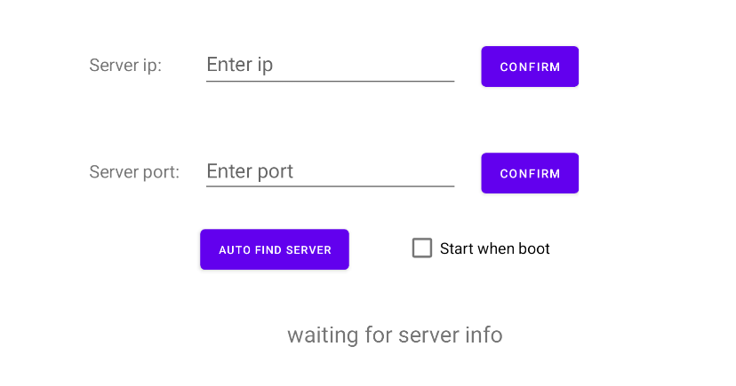

Configure via Application¶
Set Server IP and Port¶
Using the adb command:
adb shell am start com.deepoon.eggchair/.MainActivity
Open the server settings application.

Enter the server IP and port and click Confirm to apply the settings.
Once the server IP or port is set, the RDC service will start automatically.
If you need the service to start automatically at boot, check the Start when boot option.
If you want the client to automatically find the server, check the AUTO FIND option. The set IP and port will be ignored, and the client will connect automatically when the server’s device discovery feature is enabled.
Note
The device discovery feature requires the server and client to be on the same broadcast domain, and the router must allow LAN broadcasting.
Start the RDC Client Service¶
The RDC service is a native Android service with the package name com.deepoon.eggchair. The service class is declared in the AndroidManifest as follows:
<service
android:name=".LongchenClientService"
android:enabled="true"
android:exported="true"
android:persistent="true">
<intent-filter android:priority="1000">
<action android:name="com.deepoon.eggchair.LongchenClientService" />
</intent-filter>
</service>
You can start the RDC service using the standard method for starting an Android Service.
After the RDC service starts, it will automatically maintain the connection with the server and receive messages.
You can also set it to run automatically at boot to keep the RDC service running continuously.
Note
Since the RDC service continuously attempts to connect to the server and does not stop working when the screen is off, enabling the RDC service may lead to increased power consumption.